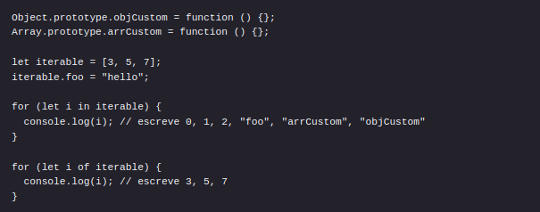

ECMA
ECMA (European Computer Manufacturers Association) é associação sem fins lucractivos que trabalha para a padronização de sistemas de informação desde os anos 1960. Atualmente é chamada de ECMA International e atua em todo o mundo.
ECMAScript x JavaScript
ECMAScript é uma padronização criada a partir da linguagem JavaScript que desde 2015 vem trazendo grandes melhorias à comunidade JS. Dentre elas, iterar objetos, declarar variáveis utilizando let e const, modularização de classes, etc.
Permite que parâmetros sejam inicializados com valores iniciais caso não seja passado nenhum valor
ou o valor seja undefined.
MDN: Default Parameters
Trata-se de uma nova forma de criar strings.
Serve para evitar escapar strings.
MDN: Template literals
Permite extrair dados de array e objetos em variáveis distintas.
MDN: Destructuring
Strict Mode
Disponível desde ECMAScript 5. Strict mode muda erros de sintaxe aceitos, como atribuir valor a uma propriedade só de leitura, ou que não existe, acessar uma variável/objeto que não existe. Trata-se de uma "configuração" opcional.
MDN: Strict mode
Hoisting
Hoisting ou içamento é o comportamento padrão do JavaScript de mover as declarações para o topo. Uma variável pode ser usada antes de ser declarada.
MDN: Hoisting
Variáveis
Declara uma variável local no escopo do bloco atual e permite a criação de variáveis com o mesmo nome no mesmo escopo.
Variáveis declaradas com var estão sujeitas ao hoisting.
MDN: Var
Declara uma variável local no escopo do bloco atual e NÃO permite a criação de variáveis com o mesmo nome no mesmo escopo.
Variáveis declaradas com let NÃO estão sujeitas ao hoisting. Isso significa que você não pode usar uma variável
sem tê-la declarado e inicializado.
MDN: Let
Cria uma variável com valor fixo - somente leitura. Constantes possuem escopo de bloco, assim como as variáveis declaradas com let.
Toda constante requer um inicializador.
Uma const cria uma referência a um valor. Isso não significa que esse valor é imutável. Se o conteúdo da variável for um objeto,
então o conteúdo do objeto pode ser alterado.

MDN: Const
Repetição com for
Cria um loop com três expressões opcionais.
MDN: For
Trata-se de um método que executa uma dada função em cada elemento de um array.
MDN: forEach
Cria um loop que percorre objetos iterativos como Array, Map, Set, etc.
O loop for...in irá iterar sobre todas as propriedades enumeráveis de um objeto.

MDN: For...Of